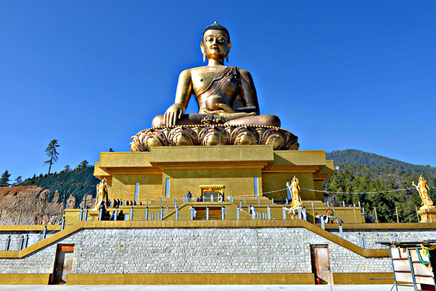
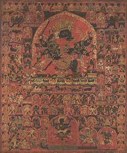

Religions of Bhutan
Buddhism
Buddhism is the state’s spiritual heritage, deeply influencing Bhutan’s culture, art, and daily life. The Ngalop people in the west and central regions mainly follow the Drukpa Lineage of Kagyu Vajrayana, while the Sharchops in the east mix Buddhism with Bon or animistic traditions. Many Bhutanese follow a combination of Kagyu and Nyingma teachings, known as "Kanyin-Zungdrel."
Hinduism
Hinduism, mainly practiced by the Lhotshampa in southern Bhutan, is the second-largest religion. Followers observe Shaivite, Vaishnavite, Shakta, Ganapathi, Puranic, and Vedic traditions. The Hindu Dharma Samudaya of Bhutan promotes spiritual practices and human values. Hindu holidays are recognized nationally.
Bon
Bon is Bhutan’s pre-Buddhist animist and shamanistic belief system, focused on nature worship. Although historically opposed by Buddhism, Bon traditions persist, with rituals for healing, protection, and annual celebrations. Bon rituals are sometimes included in Buddhist festivals.
Christianity
Christianity is followed by a very small minority (about 0.5%). Introduced in the 17th century, it did not gain widespread acceptance. Christian holidays are not recognized by the Bhutanese government.
Islam
Islam is practiced by less than 0.2% of the population and has no official recognition under the Bhutanese constitution.
Monastic Life

Monastic life is central to Bhutanese religion. Monks and nuns devote themselves to meditation, rituals, and preserving Buddhist teachings. Many young Bhutanese spend time in monasteries for spiritual education and guidance.
Rituals
Religious rituals are an essential part of daily life in Bhutan. These include offerings, prayers, and meditation performed at monasteries, stupas, and household altars. Rituals are meant to bring blessings, protection, and spiritual balance to individuals and communities. n Bhutan, Pawo (male) and Pamo (female) are spiritual shamans who act as mediums to invoke spirits and deities. Originating from pre-Buddhist Bon traditions, they ensure prosperity and protection, and sometimes appear in religious dances like the Pacham, representing their movements.
Monks
Monks in Bhutan devote themselves to meditation, rituals, and learning Buddhist teachings. They maintain monasteries, participate in festivals, and guide local communities spiritually. Young Bhutanese often spend years in monasteries studying Buddhist philosophy, ritual practices, and traditional arts. Monastic education ensures the preservation of spiritual knowledge and cultural heritage. Monks act as spiritual guides, teachers, and ritual leaders. They conduct ceremonies, bless villages, and play a crucial role in maintaining Bhutan’s cultural and religious traditions.